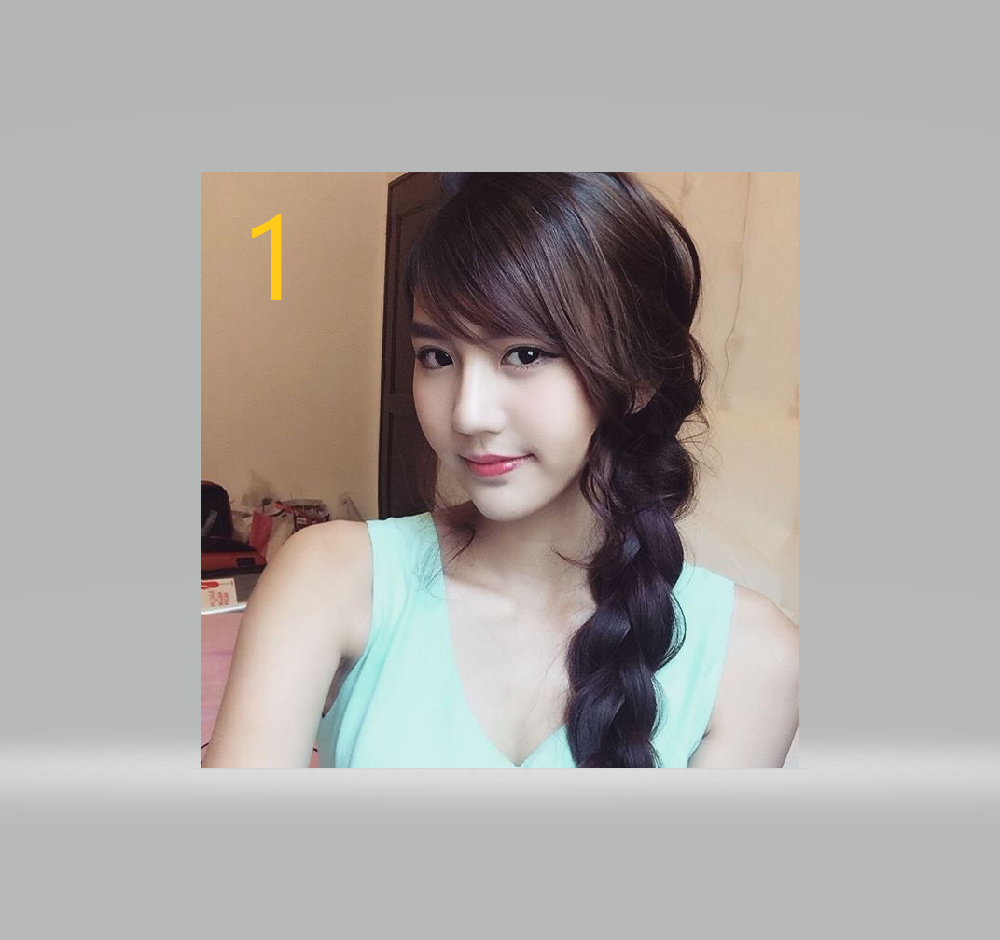

<!DOCTYPE html>
<html lang="en">
<head>
  <meta charset="UTF-8">
  <meta http-equiv="X-UA-Compatible" content="IE=edge">
  <meta name="viewport" content="width=device-width, initial-scale=1.0">
  <title></title>
  <style>
    body {
      margin: 0;
    }
    .box1 {
      width: 100vw;
      height: 30px;
      background-color: red;
    }
    .box2 {
      width: 380px;
      height: 30px;
      background-color: yellow;
    }
    /* 我手机是393px才能满足 */
    @media screen and (min-width: 393px) {
      .box1 {
        background-color: pink;
      }
    }
   </style>
</head>
<body>
  <!-- 
    piture:
    1.可以使用srcset和sizes切换分辨率
    2.可以使用媒体对象media切换图像
    3.用于受部分支持的图像类型

   -->
  <!-- 
    1.分辨率切换: 为小屏幕设备提供较小尺寸图像的问题。
    2.图像切换——在不同屏幕上显示不同图像的问题。

    picture可以做到:
    1.使用 srcset 和 size 属性切换分辨率
    srcset 属性接收多个图像，其宽度都以像素为单位，
    浏览器使用这些值在提供的图像之间进行选择。
    在上面的示例中，同一图像有 3 个版本，具有 3 种不同的尺寸。
    Sizes 属性定义图像将在屏幕上占据的空间。
    在上面的示例中，如果屏幕的最小宽度为 1280px，则图像将占据 1200px。

    只做切换分辨率不需要使用picture, 使用img就可以实现srcset sizes


    2.使用媒体属性切换图像
    landscape: 横向
    portrait: 竖向
    media ="(orientation: portrait)"
    最后一个 img 标签用于向后兼容不支持 picture 标签的浏览器

    3.用于受部分支持的图像类型

   -->

   <!-- <picture>
    <source
    srcset="./zza/1.png 400w,
    ./zza/2.png 800w,
    ./zza/3.png 1200w"
    sizes="(min-width: 1280px) 1200px,
    (min-width: 768px) 400px,
    100vw">
    
    </picture>
     -->
  <picture>
    <source media="(orientation: landscape)"
      srcset="./zza/1.png 200w,
      ./zza/2.png 600w,
      ./zza/3.png 1000w"

      sizes="(min-width: 700px) 500px,
      (min-width: 600px) 400px,
      100vw">

      <source media="(orientation: portrait)"

      srcset="./zza/4.png 700w,
      ./zza/5.png 1000w,
      ./zza/6.png 1600w"

      sizes="(min-width: 768px) 700px,
      (min-width: 1024px) 500px,
      400px">

      
  </picture>

  <!-- 部分支持的图像格式 -->
  <picture>
    <source srcset="test.avif" type="image/avif">
    <source srcset="test.webp" type="image/webp">
    
  </picture>

    <div class="box1"></div>
    <div class="box2"></div>
    <script>
      var box1 = document.querySelector('.box1')
      window.onresize = resize
      function resize () {
        var width = document.documentElement.clientWidth
        console.log(width);
        console.log(window.screen.width);
        box1.innerHTML = window.screen.width + 'width: ' + width + '像素比: ' + window.devicePixelRatio + window.devicePixelRatio * width
      }
      resize()
      window.addEventListener('orientationchange', ()=>{
    	  console.log(window.orientation)
        if(window.orientation === 0) {
          console.log('竖屏' + indow.orientation);
        } else {
          console.log('横屏' + indow.orientation);
        }
  	  })
      if(window.orientation === 0) {
          alert('竖屏' + window.orientation);
        } else {
          alert('横屏' + window.orientation);
        }
      
      
    </script>
</body>
</html>